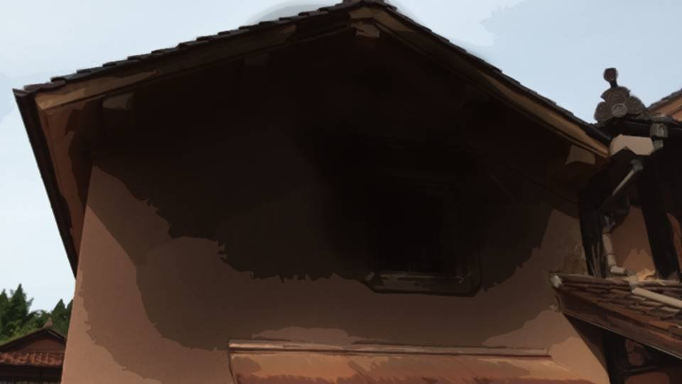
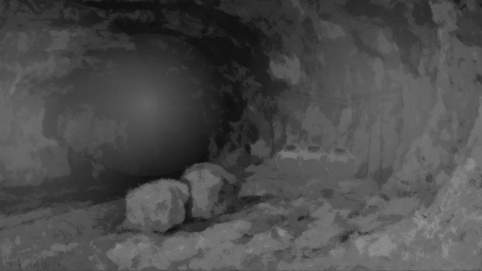

まどろみ～春の幻～

――叔父さんの十三回忌は無事に終了した。
みんな徹夜で死月妖花の相手をしたわけだから、うつらうつらする人もいたが、それを責める者はいなかった。
みんな徹夜で死月妖花の相手をしたわけだから、うつらうつらする人もいたが、それを責める者はいなかった。
能面と赤装束を着けるという荒田独特の風習も、これで終わるのだろうか。
もともと形骸化していたとはいえ、能面と赤装束が私たちを助けてくれた。
貴重な先祖の知恵なのだ。
さらに形骸化するとしても、形だけは残しておきたい。
もともと形骸化していたとはいえ、能面と赤装束が私たちを助けてくれた。
貴重な先祖の知恵なのだ。
さらに形骸化するとしても、形だけは残しておきたい。


「ああ、もう限界！ 私は寝る！」
「ん……お疲れ様、みんな」
私の背中では、夏菜が寝息を立てている。
みんなが本当によく頑張ってくれたから、呪殺事件を終わらせることができた。
「ん……お疲れ様、みんな」
私の背中では、夏菜が寝息を立てている。
みんなが本当によく頑張ってくれたから、呪殺事件を終わらせることができた。
元木町組は、当初の予定通り、今日は泊まって明日帰るそうだ。
今からみんな寝てしまうだろうけど、体内リズムは大丈夫かしら。
夜に目が覚めて眠れなくなって、明日帰る時が大変そう。
今からみんな寝てしまうだろうけど、体内リズムは大丈夫かしら。
夜に目が覚めて眠れなくなって、明日帰る時が大変そう。

「夏菜……」
夏菜を布団に寝かせ、そっと顔をなでる。
身体中に痛々しい傷が残っているが、これもすぐ良くなるだろうだろう。
おばあちゃんがこしらえてくれた薬草なら、よく効くはずだ。
夏菜を布団に寝かせ、そっと顔をなでる。
身体中に痛々しい傷が残っているが、これもすぐ良くなるだろうだろう。
おばあちゃんがこしらえてくれた薬草なら、よく効くはずだ。
夏菜はお母さんに会って、どう思っただろうか。
お母さんに会えたと言っても、肉体が腐り、朽ちていくという痛々しいものだった。
私は最後にお母さんともう一度言葉を交わせたことが嬉しかった。
でも、辛かった。
お母さんに会えたと言っても、肉体が腐り、朽ちていくという痛々しいものだった。
私は最後にお母さんともう一度言葉を交わせたことが嬉しかった。
でも、辛かった。
お母さん……今まで、本当につらかったよね。
ずっとずっと、死月妖花に操られていて――。
でも……私は気づいたのだ。
ずっとずっと、死月妖花に操られていて――。
でも……私は気づいたのだ。
呪殺事件は、まだ真の解決には至っていない。
まだ、追及しなくてはならないことがあるのだ。
まだ、追及しなくてはならないことがあるのだ。
「ん……はい」
「すみません、失礼します」
「すみません、失礼します」

入ってきたのは五島ちゃんだった。
眠そうな目をしているが、妙にその眼光が鋭い。
その目を、夏菜の方に向ける。
眠そうな目をしているが、妙にその眼光が鋭い。
その目を、夏菜の方に向ける。

「夏菜ちゃん、本気で私たちを助けようと、頑張ってくれましたね。
怪我した脚に鞭打って古郡先輩を助け出したり、私がチガ姉に首を絞められたとき、本気で助けてようとしてくれたり」
これは、私を責めているのだろうか。
演技とは言え、私は五島ちゃんに過剰な恐怖と苦痛を与えたのだ。
これは、私を責めているのだろうか。
演技とは言え、私は五島ちゃんに過剰な恐怖と苦痛を与えたのだ。
「ん……ごめん、五島ちゃん……」
「え？

あ、すみません、そういうつもりで言ったんじゃないんです。
ああするしかなかったって分かっていますから」
五島ちゃんは私の両肩を優しくつかみながらそう話す。
それでも、五島ちゃんを苦しめたことには変わりない。
五島ちゃんは私の両肩を優しくつかみながらそう話す。
それでも、五島ちゃんを苦しめたことには変わりない。
「ん……でも、あの時は私がお父さんにファルシフィカソを打たれたからよかったけど、そうでなかったら……」
「それを言い出したらキリがないですよ。
何であれ、どこか1つでも間違えていたら……」
「ん……そうね。 でも、やっぱり五島ちゃんを私は……」
「ん……そうね。 でも、やっぱり五島ちゃんを私は……」

「だったら、今度あの東京の料亭でおごってくださいよ！」
「ええ！！？ それは……ちょっと……」
「あははは！ 冗談ですよ！ そんなことしたら、チガ姉はサラ金、借金まみれです！」
「ん……どれだけ食べるつもりよ……」
「ええ！！？ それは……ちょっと……」
「あははは！ 冗談ですよ！ そんなことしたら、チガ姉はサラ金、借金まみれです！」
「ん……どれだけ食べるつもりよ……」

「エリ姉……？」
眠っていた夏菜が、五島ちゃんの声に反応したようだ。
眠っていた夏菜が、五島ちゃんの声に反応したようだ。
「ああ、ごめん夏菜ちゃん、はしゃいじゃって……」

「えへ」
「ん？」
「お姉ちゃんが、2人いる……」
と、私と五島ちゃんは顔を見合わせる。
「ん？」
「お姉ちゃんが、2人いる……」
と、私と五島ちゃんは顔を見合わせる。
「じゃあ、私とチガ姉も、姉妹ですかね？」
「ん……ふふ、そうね」
そして笑い合う。
眠気も忘れるような、和やかな空気だ。
「ん……ふふ、そうね」
そして笑い合う。
眠気も忘れるような、和やかな空気だ。

にしても、五島ちゃんはどうしてこの部屋に来たのだろうか。
まだ本題を聞いていない。
五島ちゃんは夏菜の頭をなで、もう一度眠らせようとしている。
そのまま夏菜を優しいまなざしで見つめ、夏菜も母親を見るかのように穏やかな笑みを浮かべる。
五島ちゃんの目に、先ほどの鋭い眼光はどこにもない。
まだ本題を聞いていない。
五島ちゃんは夏菜の頭をなで、もう一度眠らせようとしている。
そのまま夏菜を優しいまなざしで見つめ、夏菜も母親を見るかのように穏やかな笑みを浮かべる。
五島ちゃんの目に、先ほどの鋭い眼光はどこにもない。
これはつまり……
五島ちゃんは私と同じことを考えている。
夏菜が起きていては話せないこと。
まだ追及が終わっていない、裏に隠されたこと。
夏菜が起きていては話せないこと。
まだ追及が終わっていない、裏に隠されたこと。
――やがて、夏菜は再び眠りにつき、すやすやと寝息を立て始めた。
「…………」
「ん……五島ちゃん、私に話したいことがあって、ここに来たんでしょ？」
「ん……五島ちゃん、私に話したいことがあって、ここに来たんでしょ？」
「ちょっと付き合ってください。行くところがあります」
五島ちゃんの目にあの眼光が戻る。
「ん……分かったわ」
五島ちゃんの目にあの眼光が戻る。
「ん……分かったわ」

「ん……何？ これ……」
「チガ姉は知らなかったと思いますが、昨日この蔵が焼けたんです」
2階部分が激しくすすけ、明らかに火事があったことを示している。
2階部分が激しくすすけ、明らかに火事があったことを示している。
「この火事、2階部分だけ焼けていたんです」
「ん……2階部分……？」
「はい、もともと火の元のない蔵で火事が起こるとすれば、漏電か放火です。 しかし、電気系統に問題はありませんでしたし、燃えたのはテーブルの上の本だけでした」
「ん……2階部分……？」
「はい、もともと火の元のない蔵で火事が起こるとすれば、漏電か放火です。 しかし、電気系統に問題はありませんでしたし、燃えたのはテーブルの上の本だけでした」
「ん……叔父さんか、お母さんがやったのかしら……」
「いえ、蔵の本は、私たちを山頂に誘導するのに必要なものでした。 古郡先輩と、あと誰か1人を神使として死月妖花の一部にしようとしていたわけですから」
「ん……じゃあ、死月妖花の野望に気づいた人が燃やしたってこと？」
「いえ、蔵の本は、私たちを山頂に誘導するのに必要なものでした。 古郡先輩と、あと誰か1人を神使として死月妖花の一部にしようとしていたわけですから」
「ん……じゃあ、死月妖花の野望に気づいた人が燃やしたってこと？」
「それも違いますね。火事が起きる前に、私たちは既に死月妖花のことを知ったので手遅れでした。
ただ単純に、私たちにこれ以上、あの本を読まれては困る人がいたんです」
「ん……人……？」
「はい、放火したのは、集落の人間の誰かです」
「…………」
なるほど、そういうことか。
であれば、私が追及したいことともつながってくる。
「ん……人……？」
「はい、放火したのは、集落の人間の誰かです」
「…………」
なるほど、そういうことか。
であれば、私が追及したいことともつながってくる。
「ん……五島ちゃん、私も見てもらいたいものがあるの。ついてきてくれるかしら？」
「はい」
「はい」

――私たちがやって来たのは、秘密基地の地下、鉄格子の扉の前だ。
「なるほど……」
扉の前に立っただけで、五島ちゃんは何かを察したようだ。
「ここはもともと立入禁止になっていた。 でも、この鉄格子の扉部分には、妙に古いクモの巣が少ない。 誰かが頻繁に出入りしていたってことです」
「…………」
扉の前に立っただけで、五島ちゃんは何かを察したようだ。
「ここはもともと立入禁止になっていた。 でも、この鉄格子の扉部分には、妙に古いクモの巣が少ない。 誰かが頻繁に出入りしていたってことです」
「…………」

――！！
鍵が開いている。
今朝ここを通って山から帰ってきたが、確かに私が鍵をかけた。
誰かが今、この先にいるということだ。
鍵が開いている。
今朝ここを通って山から帰ってきたが、確かに私が鍵をかけた。
誰かが今、この先にいるということだ。

「ん……やっぱりいたのね」
そこにいたのは――。
そこにいたのは――。

「茅萱……」
手に沈丁花を持つお父さんだった。
手に沈丁花を持つお父さんだった。
「幸太郎さん、話してもらえませんか？
ここで、何があったんですか？」
「ん……まだ分からないことがたくさんあるの。 お父さんがやたらと犯人扱いされていたり、ごくたまにお母さんのような予知能力を得ることがあったり」
「ん……まだ分からないことがたくさんあるの。 お父さんがやたらと犯人扱いされていたり、ごくたまにお母さんのような予知能力を得ることがあったり」

お父さんはしゃがむと、花を山頂へ続く穴の前に置いた。
そして手を合わせ、じっと祈りをささげている。
そして手を合わせ、じっと祈りをささげている。
「ん……叔父さんにここへ連れ去られた時、私はファルシフィカソ、そしてドローガを打たれた。
お父さんはもう一度ファルシフィカソを打って治してくれたけど、どうしてお父さんはここに私がいるって分かったの？」
「…………」
「…………」
「ん……お父さんは、いずれ叔父さんたちがここに来るって分かっていたのよね？
火事で消火を手伝ってくれたお礼で集落を回ると言いながら、ここに潜んでいた。
どういうことなの？」
「…………」
「…………」
「幸太郎さん、もしあなたがもっと早くこのことを言っていたら、呪殺事件なんて何年も前に解決していたんじゃないですか？」
「…………」
「ん……お父さん……。何か言ってよ……」
「…………」
「…………」
「ん……お父さん……。何か言ってよ……」
「…………」

幸太郎さんは目を開けると、ゆっくりと立ち上がった。
「俺は集落のみんなから頼られている自負はある。
でも……ふたを開けてみればこんなものだ。
いまだにサクラが死んだことを受け入れられず、女々しくサクラの幻影に操られていた」
「やっぱりそうだったんですね。 幸太郎さん、あなたは…… ここでいつも…… 死んだサクラさんに会っていたんですね？」
「………… ああ……」
「やっぱりそうだったんですね。 幸太郎さん、あなたは…… ここでいつも…… 死んだサクラさんに会っていたんですね？」
「………… ああ……」
――10年前、俺は茅萱の翠眼呪殺の治療のため、蔵にある本を読みつくしていた。
だから死月妖花のことも、セレジェイラ聖教のことも10年前から知っていた。
だから死月妖花のことも、セレジェイラ聖教のことも10年前から知っていた。

「サクラ……」
サクラが死んでから数日後。
俺はサクラが好きだった沈丁花を、遺体が見つかった河原に置いた。
その時――。
サクラが死んでから数日後。
俺はサクラが好きだった沈丁花を、遺体が見つかった河原に置いた。
その時――。
「な、何だ……！？」
あの、『猛き音』が鳴り――。
あの、『猛き音』が鳴り――。
「幸太郎……」
その声を聞いた瞬間、猛き音も、渓流の音も俺の耳から遠ざかった。
その声を聞いた瞬間、猛き音も、渓流の音も俺の耳から遠ざかった。

「サクラ……！？ どうして……」
「死月妖花の力でよみがえったのよ」
「まさか……！」
「でもね、よみがえったけど、生き返ったわけじゃないの。 私は死んでいるけど、肉体を死月妖花が再生してくれた」
「死月妖花の力でよみがえったのよ」
「まさか……！」
「でもね、よみがえったけど、生き返ったわけじゃないの。 私は死んでいるけど、肉体を死月妖花が再生してくれた」
「それでも、またみんなと暮らすことはできないのか！？」
「それはできないわ。ごく限られた場所で、ごく限られた人としか会えないの。 本当は、この場所でも会ってはいけないの」
「じゃあ、どこなら……！」
「私たちが子供の頃に、秘密基地にしていた場所があるでしょ？ その1番奥でなら」
「わ、分かった……！」
「それはできないわ。ごく限られた場所で、ごく限られた人としか会えないの。 本当は、この場所でも会ってはいけないの」
「じゃあ、どこなら……！」
「私たちが子供の頃に、秘密基地にしていた場所があるでしょ？ その1番奥でなら」
「わ、分かった……！」

「ここにこんなところが……」
「ずっと昔、立入禁止になったみたいなの。 ここにはね、女神様に通じる道があるの」
「女神様……死月妖花のことか？」
「そう、だからここは大切な場所なの。そして誰にも気づかれない場所」
「ずっと昔、立入禁止になったみたいなの。 ここにはね、女神様に通じる道があるの」
「女神様……死月妖花のことか？」
「そう、だからここは大切な場所なの。そして誰にも気づかれない場所」
それから俺は、この場所で定期的にサクラと会っていた。
母さんにも黙って、俺は1人、サクラと密会を続けた。
そしてあれは、サクラと再会してから2年後の祀耀792年―― 2度目の呪殺事件が発生した直後のことだった。
母さんにも黙って、俺は1人、サクラと密会を続けた。
そしてあれは、サクラと再会してから2年後の祀耀792年―― 2度目の呪殺事件が発生した直後のことだった。
「呪殺された……？」
「ああ、今年もまた、1人殺された。 みんなは表立って言わないけど、サクラの死を恨んで、俺が集落に復讐していると思っているみたいだ。 俺は絶対にやっていないのに……」
「本当に幸太郎がやったわけじゃないのよね？」
「当たり前だろ！？ そんなこと、俺が……！」
「ああ、今年もまた、1人殺された。 みんなは表立って言わないけど、サクラの死を恨んで、俺が集落に復讐していると思っているみたいだ。 俺は絶対にやっていないのに……」
「本当に幸太郎がやったわけじゃないのよね？」
「当たり前だろ！？ そんなこと、俺が……！」
「…………」
「サクラ？」
「だったら、幸太郎が疑われないように協力するわ。 来年、幸太郎は自分からみんなに見張ってもらうようにして。 その間に呪殺が起これば、幸太郎が無実なのは明らか」
「サクラ？」
「だったら、幸太郎が疑われないように協力するわ。 来年、幸太郎は自分からみんなに見張ってもらうようにして。 その間に呪殺が起これば、幸太郎が無実なのは明らか」
「どういうことだ？
まさか呪殺事件、お前が……！」
「幸太郎、死月妖花の生態は知っているでしょ？ 死月妖花――女神様は人間を恐れている。 またあの教団のように、女神様の地を荒らしてしまうんじゃないかって」
「幸太郎、死月妖花の生態は知っているでしょ？ 死月妖花――女神様は人間を恐れている。 またあの教団のように、女神様の地を荒らしてしまうんじゃないかって」
「老人たちを自殺に見せかけて殺しても、集落の人たちは粘り強くここを守り続けている。
だから今度は、新村家以外の人間を少しずつ殺すことにしたの。
それが嫌なら、みんなに早くここから去ってくれるよう、言ってくれるとありがたいんだけど……」
「なるほど、単に殺すだけでは住人同士の不信を煽ることになる。
そうなると警察――外部の人間がいつ来るか分からない。
老人の自殺ってそういうことだったのか。
老人になったら自殺してしまう集落から人間を追い出したかったけど、それもうまくいかなかったと」
「どう？ みんなに出ていくよう、言ってもらえない？」
「どう？ みんなに出ていくよう、言ってもらえない？」
「何の見返りもなく自分の土地を明け渡すなんて、なかなかできることじゃない。
まして荒田のように土着した住人だったら……。
老人の自殺を見せつけられても逃げ出さなかったわけだし」
「そうよね……それは分かっているわ」
「そうよね……それは分かっているわ」
「それに俺までここを離れてしまったら、サクラに会えなくなるじゃないか！」
「確かにそうね……。 でも……これから毎年、つらいわよ？ 住人が毎年1人ずつ死んでいくんだから」
「お前を失うよりはマシさ……」
「確かにそうね……。 でも……これから毎年、つらいわよ？ 住人が毎年1人ずつ死んでいくんだから」
「お前を失うよりはマシさ……」
「そっか……。
それと、例の約束、覚えているわよね？」
「茅萱の翠眼をそのままにしておくって話か？」
「ええ、夏菜の方は治しても構わない。 でも、茅萱の方は――」
「やっぱり、その理由は聞かせてもらえないのか？」
「ごめん……」
「茅萱の翠眼をそのままにしておくって話か？」
「ええ、夏菜の方は治しても構わない。 でも、茅萱の方は――」
「やっぱり、その理由は聞かせてもらえないのか？」
「ごめん……」
俺は弱かった。
サクラが本当に消えてしまう恐怖に耐えられず、俺は呪殺事件が起こることも、犯人も知っていながら黙っていた。
茅萱の翠眼を放置することも、危険なことだと分かっていた。
蔵の本だって、いつ誰にそのことに気づかれるか分からず、手がかりをなくしてしまうのが1番だと思った。
サクラが本当に消えてしまう恐怖に耐えられず、俺は呪殺事件が起こることも、犯人も知っていながら黙っていた。
茅萱の翠眼を放置することも、危険なことだと分かっていた。
蔵の本だって、いつ誰にそのことに気づかれるか分からず、手がかりをなくしてしまうのが1番だと思った。
しかし捨てたりしたら怪しまれるから、茅萱に翠眼呪殺を住人たちに知られないようにする名目で、8年前に蔵書部屋に電子錠をつけた。
でも……
でも昨日、蔵に火をつけた後、やっと気づいた。
いや、目が覚めたというべきか。
いや、目が覚めたというべきか。

すでに何人もの死体が荒田を歩き回っていた。
俺が隠そうとしていたことを、もう死月妖花は隠す気もなかった。
俺が隠そうとしていたことを、もう死月妖花は隠す気もなかった。
つまり、サクラが俺に会っていたのはサクラの意思ではなく、死月妖花の意思だった。
分かっていたのに…… 心のどこかで死月妖花の仕業と分かっていたのに。
分かっていたのに…… 心のどこかで死月妖花の仕業と分かっていたのに。

だから俺は昨夜ここにひそんでいた。
あいつらは必ずここを通って死月妖花のところへみんなを連れていく。
ドローガに感染していたなつみちゃんを何とかして治すことができればと思い、法要で使う予定だったファルシフィカソを用意した。
あいつらは必ずここを通って死月妖花のところへみんなを連れていく。
ドローガに感染していたなつみちゃんを何とかして治すことができればと思い、法要で使う予定だったファルシフィカソを用意した。
結果的に茅萱にしか使えなかったが、それでも死月妖花を騙すには十分だった。
俺のせめてもの仕返しだ。
俺は、ずっと死月妖花に騙され続けていた。
俺のせめてもの仕返しだ。
俺は、ずっと死月妖花に騙され続けていた。
Read ✓ Next in this arc →